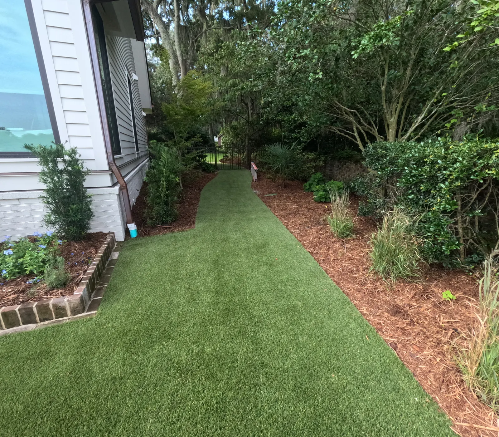

A Low Maintenance Yard Is a Design Decision

Low Maintenance Is Designed, Not Bought
Low maintenance is a design outcome, not a product you buy. Almost every high-maintenance yard we are called into was created by decisions made years earlier.

Right Plant, Right Size, Right Place
The single biggest cause of endless yard work is plants that outgrow their spot. A shrub kept permanently at half its natural size needs cutting several times a year, forever.
Our rules for a low-maintenance bed are short: evergreens, ground cover to keep the weeds out, and proper spacing.
So we space for mature size, and we do not over plant to make a bed look finished on install day. A bed that looks a little open in year one is a bed that looks right in year three without anyone fighting it.
Layering does the same work: heights and textures chosen so the planting grows together as one picture rather than competing for the same space.
Five Decisions That Cut the Work
- Shrink the lawn to the part you use. Lawn is the highest-maintenance surface in any yard. Beds, hardscape and ground cover are not.
- Use turf where grass keeps losing — deep shade, dog runs, tight courtyards, poolside. From $13 per sq ft including base prep.
- Ground cover instead of more shrubs. Agapanthus, sweetgrass, mondo and ferns finish a bed and keep weeds from getting a start, without adding things to prune.
- Automatic irrigation. Hand watering is where plants die, and it is also a chore. About $1,000 a zone, five zones on an average lot, plus $1,500 for backflow and timer. In Charleston, run it on an irrigation meter if you can: Charleston Water bills sewer on sprinkler water that goes through the house meter, and not on an irrigation meter (the numbers are here).
- Fix the drainage first. A wet yard creates endless problems that look like plant problems.

What Still Needs Doing
No yard is zero maintenance, and any company promising that is selling something.
Mulch goes down once a year at $105 a yard; pine straw wants refreshing two or three times. Turf needs washing and power brooming when dirt and leaves build up, plus a top-up of sand. And planting needs shaping as it establishes — which, for clients whose projects we built, is something we come back and do.
What the Research and the Code Say About Water
The EPA's WaterSense program estimates that as much as 50 percent of the water used outdoors is lost to wind, evaporation and runoff caused by inefficient irrigation. It also says replacing a clock-based timer with a WaterSense-labeled controller can cut an average home's irrigation water use by up to 30 percent, as much as 15,000 gallons a year.1
2021 IPC 608 · Backflow protection
An irrigation system connected to the drinking-water supply has to be protected against backflow, so lawn water can never be drawn back into the house.2
South Carolina did not modify this section; the approved device comes from the code and the local water utility.3
References are to the 2021 edition South Carolina enforces today; the 2024 edition takes effect statewide on January 1, 2027. Your local building department decides how any of it applies to a particular property.
Sources
Frequently Asked Questions
How do I make my Charleston yard lower maintenance?
Design it that way: evergreens, ground cover to keep weeds out, and proper spacing for mature size. Do not over plant, shrink the lawn to the part you actually use, put in automatic irrigation, and fix drainage first.
Is artificial turf maintenance free?
No. It needs washing and power brooming when dirt and leaves build up, and a top-up of sand afterwards. Under oaks that is an annual job.
What is the highest maintenance part of a yard?
The lawn, by a distance. Reducing lawn to the area you use and replacing the rest with beds, hardscape or ground cover removes most of the recurring work.
How often does mulch need replacing?
Mulch once a year at $105 a yard. Pine straw needs refreshing two to three times a year.
See It Built
Projects where we put this into practice.


Planning a Project of Your Own?
See everything we design and build, or get in touch to talk through your ideas with Doug and Zach.